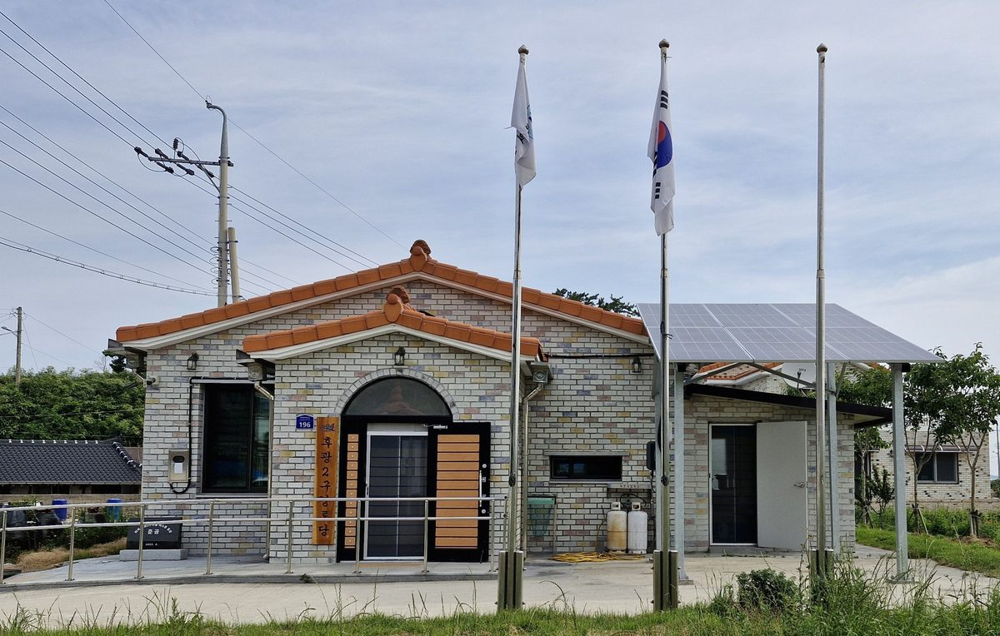

"햇빛소득마을, 속도보다 이익 나누는 설계가 먼저"…강천구 인하대 초빙교수 기고

정보 공개·실질적 동의·계통 사전 확인·표준 이익공유 모델 제안, 시범마을로 검증한 뒤 단계적 확대 주장
강천구 인하대 초빙교수는 기고에서 햇빛소득마을이 농촌 에너지 전환과 주민 소득을 잇는 의미 있는 정책이지만, 짧은 기간에 전국으로 빠르게 늘리는 데는 위험이 따른다고 지적했다. 1차 선정 86곳 가운데 요건을 모두 갖춘 곳은 9곳뿐이었고, 마을 소득은 발전량·전력과 REC 가격·금융비용·출력제한에 따라 달라지므로 미리 보장된 것이 아니라는 것이다. 필자는 신안 지도읍 사례도 성과와 조건에 따라 배당이 달라지는 만큼 어디서나 그대로 재현되기는 어렵다고 보고, 사업비·자기자본과 대출 비율·예상 수익·1인당 배당·회수기간 공개, 찬성률 70%를 넘어선 숙의, 지붕·공공시설·유휴지 우선 활용, 선정 단계의 계통 확인, 정부의 표준 이익공유 모델과 회계 기준을 제안했다. 또 2~3년간 100~200개 시범마을로 수익과 갈등 관리를 검증한 뒤 유형별로 넓혀 가자며, 중요한 것은 몇 곳을 빨리 만드느냐가 아니라 10년 뒤에도 주민 소득이 남느냐라고 강조했다.
시민에너지 관점
수익 구조를 공개하고 주민 사이의 이해 차이를 숙의로 풀자는 제안은 주민 소유 사업이 오래가기 위한 기본 조건과 맞닿아 있다. 다만 속도를 늦추자는 주장이 자칫 준비된 마을의 기회까지 미루는 쪽으로 흐르지 않도록, 검증과 확산을 함께 굴리는 방법도 고민할 필요가 있다. 표준 이익공유 모델과 정보 공개 기준이 마련된다면 마을마다 같은 실수를 되풀이하지 않고 서로의 경험을 나눌 수 있을 것이다.
정부는 기고가 제안한 사업비·자기자본과 대출 비율·예상 수익·1인당 배당·회수기간 공개를 햇빛소득마을 신청의 기본 제출 자료로 정하는 방안을 검토할 수 있다. 준비가 된 마을은 그대로 추진하되, 표준 이익공유 모델과 회계 기준을 먼저 적용해 보는 시범 마을로 삼아 검증과 확산을 함께 굴릴 수 있다. 선정 단계에서 계통 여건을 확인하고 지붕·공공시설·유휴지를 먼저 쓰도록 하는 기준도 공모 지침에 넣을 만하다. 마을은 찬성률을 채우는 데서 그치지 않고, 반대하는 주민의 이야기를 듣는 숙의 자리를 따로 만들 수 있다.
출처: 전기신문 2026-10-21 강천구(인하대 초빙교수, 기고) 원문 보기
「日差し所得村、速さより利益を分かち合う設計が先」…姜天求・仁荷大客員教授が寄稿
情報公開・実質的な同意・系統の事前確認・標準的な利益共有モデルを提案、モデル村で検証したうえで段階的な拡大を主張
姜天求（カン・チョング）仁荷大学客員教授は寄稿で、「日差し所得村（햇빛소득마을）」は農村のエネルギー転換と住民所得を結びつける意義ある政策だが、短期間で全国に急拡大することにはリスクが伴うと指摘した。第1次選定の86か所のうち要件をすべて満たしたのは9か所にとどまり、村の所得は発電量・電力とREC価格・金融費用・出力制御によって変わるため、あらかじめ保証されたものではないという。筆者は新安郡智島邑の事例も成果や条件によって配当が変わるだけに、どこでもそのまま再現できるわけではないとみて、事業費・自己資本と借入の比率・予想収益・1人当たり配当・回収期間の公開、賛成率70%を超える熟議、屋根・公共施設・遊休地の優先活用、選定段階での系統確認、政府による標準的な利益共有モデルと会計基準を提案した。さらに2〜3年かけて100〜200のモデル村で収益と対立管理を検証したうえで類型別に広げていくべきだとし、大切なのは何か所を早くつくるかではなく、10年後にも住民の所得が残るかどうかだと強調した。
市民エネルギーの視点
収益構造を公開し、住民の間の利害の違いを熟議で解きほぐそうという提案は、住民所有の事業が長続きするための基本条件と重なる。ただし速度を落とそうという主張が、準備の整った村の機会まで先送りする方向に流れないよう、検証と普及を並行して進める方法も考える必要がある。標準的な利益共有モデルと情報公開の基準が整えば、村ごとに同じ失敗を繰り返さず、互いの経験を分かち合えるだろう。
政府は、寄稿が提案した事業費・自己資本と借入の比率・予想収益・1人当たり配当・回収期間の公開を、太陽光所得村の申請の基本提出資料とする案を検討できる。準備の整った村はそのまま進めつつ、標準的な利益共有モデルと会計基準を先に適用するモデル村と位置づけ、検証と普及を並行して進められる。選定段階で系統の状況を確かめ、屋根・公共施設・遊休地を優先して使うよう求める基準も、公募の指針に入れる価値がある。村は賛成率を満たすだけでなく、反対する住民の話を聞く熟議の場を別に設けることができる。
出典: Electric Times (Jeongi Sinmun) 2026-10-21 Kang Cheon-gu (visiting professor, Inha University; contributed column) 原文を読む
"阳光收入村，分享利益的设计比速度更重要"…仁荷大学客座教授姜天求撰文
提议信息公开、实质同意、事先确认电网和标准利益共享模式，主张先以示范村检验再分阶段推广
仁荷大学客座教授姜天求撰文指出，"阳光收入村"是把农村能源转型与居民收入联系起来的有意义的政策，但在短时间内迅速推广到全国存在风险。第一轮入选的86个村中，完全符合条件的只有9个；而村庄收入取决于发电量、电价和REC价格、融资成本以及限电，并不是事先有保障的。作者认为，新安郡智岛邑的案例中分红也随业绩和条件变化，难以在各地原样复制，并提出：公开项目费用、自有资金与贷款比例、预期收益、人均分红和回收期；在70%赞成率之外进行充分协商；优先利用屋顶、公共设施和闲置土地；在选定阶段确认电网接入；由政府制定标准利益共享模式和会计标准。他还主张先用2至3年时间在100至200个示范村检验收益和冲突管理，再按类型推广，并强调关键不在于多快建成多少个村，而在于10年后居民收入是否依然存在。
市民能源视角
公开收益结构、通过协商化解居民之间利益差异的提议，与居民所有项目长期运营的基本条件相契合。不过，为避免放慢速度的主张演变为连已做好准备的村庄的机会也被推迟，还需要思考检验与推广并行的办法。如果能建立标准利益共享模式和信息公开标准，各村就可以避免重复同样的错误，并相互分享经验。
政府可以研究把投稿提出的项目费用、自有资本与贷款比例、预期收益、人均分红和回收期公开，定为阳光收入村申请的基本提交材料。已做好准备的村庄可以照常推进，同时作为率先适用标准利益共享模式和会计标准的试点村，让检验与推广并行。在遴选阶段核实电网条件、要求优先利用屋顶、公共设施和闲置地的标准，也值得写入招募指南。村庄不应止于达到赞成率，还可以另设协商场合，倾听持反对意见居民的声音。
来源: Electric Times (Jeongi Sinmun) 2026-10-21 Kang Cheon-gu (visiting professor, Inha University; contributed column) 查看原文
"Sunlight income villages need benefit-sharing design before speed," writes Inha University's Kang Cheon-gu
Op-ed proposes disclosure, meaningful consent, early grid checks and a standard benefit-sharing model, with phased expansion after pilot villages
In a column, Inha University visiting professor Kang Cheon-gu argued that sunlight income villages are a meaningful policy linking rural energy transition with resident income, but that expanding them rapidly nationwide in a short period carries risks. Only 9 of the 86 villages chosen in the first round fully met the requirements, he noted, and village income depends on generation, power and REC prices, financing costs and curtailment, so it is not guaranteed in advance. Viewing even the Jido-eup case in Sinan County as hard to replicate everywhere because dividends vary with performance and conditions, he proposed disclosing project costs, equity-to-loan ratios, expected revenue, per-resident dividends and payback periods; deliberation that goes beyond a 70% approval threshold; prioritizing rooftops, public facilities and idle land; checking grid connection at the selection stage; and a government standard benefit-sharing model with accounting rules. He called for testing revenue and conflict management in 100 to 200 pilot villages over two to three years before expanding by type, stressing that what matters is not how quickly villages are built but whether residents still have income ten years on.
Citizen Energy View
The call to disclose revenue structures and work through differing interests among residents by deliberation matches the basic conditions for resident-owned projects to last. Still, care is needed so that the argument for slowing down does not end up delaying opportunities for villages that are already prepared, which means looking for ways to test and expand at the same time. If a standard benefit-sharing model and disclosure rules are put in place, villages can avoid repeating the same mistakes and share their experience with one another.
The government could consider making the disclosures the author proposes, covering project cost, the ratio of equity to loans, expected revenue, dividends per person and payback period, a standard part of every Sunlight Income Village application. Villages that are ready could go ahead while serving as pilots that apply a standard benefit-sharing model and accounting rules first, so that testing and expansion move together. Criteria for checking grid conditions at the selection stage and for using roofs, public facilities and idle land first are also worth adding to the program guidelines. Villages need not stop at reaching the approval threshold; they could hold separate deliberation sessions to hear residents who are opposed.
Source: Electric Times (Jeongi Sinmun) 2026-10-21 Kang Cheon-gu (visiting professor, Inha University; contributed column) Read the original